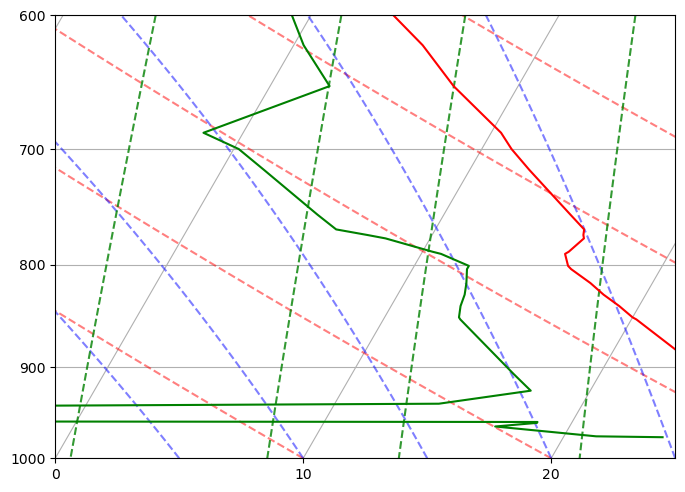

Assignment 2: Scale heights for typical atmospheric soundings#
Due (upload to canvas) Friday, January 23 before midnight
The link to download hydrostatic_scaling.ipynb
Tasks#
Get a unique sounding for your assigned region and season
Plot the dewpoint and temperature soundings using metpy
Write a function to calculate the pressure scale height
Write a funcion to calculate the density scale height
Plot the vertical pressure profile vs. the hydrostatic pressure profile for your pressure scale height
1. Getting a sounding#
In the cell below, change the region, year, month and station to get a unique sounding for analysis (i.e. I’d like to spread out the soundings among regions and seasons). The url for the Wyoming page is: https://weather.uwyo.edu/upperair/sounding.html
from a405.soundings.wyominglib import write_soundings
from pathlib import Path
values=dict(region='samer',year='2013',month='2',start='2700',stop='2800',station='82965')
curr_dir = Path()
sounding_dir = (curr_dir / 'brazil_soundings').absolute()
print(f"writing sounding to {sounding_dir=}")
write_soundings(values, sounding_dir)
writing sounding to sounding_dir=PosixPath('/Users/phil/repos/a405/assignments/brazil_soundings')
input_dict={'region': 'samer', 'year': '2013', 'month': '2', 'start': '2700', 'stop': '2800', 'station': '82965'}
len(html_doc)=30917 from write_soundings
header is: 82965 SBAT Alta Floresta (Aero) Observations at 00Z 27 Feb 2013
here is the day: 130227
here is the day: 130227
here is the day: 130228
files written to /Users/phil/repos/a405/assignments/brazil_soundings
Plot your sounding here – change the date to match your key#
from a405.soundings.wyominglib import read_soundings
wyoming_dict = read_soundings(sounding_dir)
sounding_dict = wyoming_dict['sounding_dict']
the_sounding = sounding_dict[(2013, 2, 27, 0)]
press = the_sounding['pres'].to_numpy() # hPa
dewpoint = the_sounding['dwpt'].to_numpy() # degC
temp = the_sounding['temp'].to_numpy() # degC
height = the_sounding['hght'].to_numpy() # meters
tempK = temp + 273.15
pressPa = press*100.
height_km = height/1000.
# example
the_sounding
| Unnamed: 0 | pres | hght | temp | dwpt | relh | mixr | drct | sknt | thta | thte | thtv | |
|---|---|---|---|---|---|---|---|---|---|---|---|---|
| 0 | 0 | 976.0 | 288.0 | 25.0 | 24.0 | 94.0 | 19.611583 | 0.0 | 0.0 | 300.2 | 358.2 | 303.8 |
| 1 | 1 | 975.0 | 297.0 | 24.8 | 21.3 | 81.0 | 16.583524 | 2.0 | 0.0 | 300.1 | 349.1 | 303.1 |
| 2 | 2 | 964.0 | 398.0 | 27.0 | 17.0 | 54.0 | 12.749887 | 21.0 | 1.0 | 303.3 | 341.6 | 305.6 |
| 3 | 3 | 960.0 | 435.0 | 26.6 | 18.6 | 61.0 | 14.193441 | 28.0 | 2.0 | 303.3 | 345.8 | 305.9 |
| 4 | 4 | 959.0 | 444.0 | 26.6 | 18.6 | 61.0 | 14.208579 | 29.0 | 2.0 | 303.4 | 345.9 | 305.9 |
| 5 | 5 | 958.0 | 454.0 | 26.6 | -22.4 | 3.0 | 0.663143 | 31.0 | 2.0 | 303.4 | 305.8 | 303.6 |
| 6 | 6 | 956.0 | 472.0 | 26.6 | -22.4 | 3.0 | 0.664532 | 35.0 | 2.0 | 303.6 | 305.9 | 303.8 |
| 7 | 7 | 944.0 | 584.0 | 26.2 | -22.8 | 3.0 | 0.649642 | 56.0 | 3.0 | 304.3 | 306.6 | 304.4 |
| 8 | 8 | 939.0 | 631.0 | 26.2 | 14.2 | 48.0 | 10.907270 | 65.0 | 4.0 | 304.8 | 337.8 | 306.8 |
| 9 | 9 | 925.0 | 764.0 | 25.6 | 17.6 | 61.0 | 13.824845 | 90.0 | 5.0 | 305.5 | 347.3 | 308.0 |
| 10 | 10 | 907.0 | 936.0 | 24.3 | 16.5 | 62.0 | 13.135458 | 75.0 | 6.0 | 305.9 | 345.8 | 308.3 |
| 11 | 11 | 852.0 | 1482.0 | 20.2 | 13.1 | 64.0 | 11.195814 | 70.0 | 13.0 | 307.0 | 341.3 | 309.1 |
| 12 | 12 | 850.0 | 1503.0 | 20.0 | 13.0 | 64.0 | 11.148197 | 70.0 | 13.0 | 307.1 | 341.1 | 309.1 |
| 13 | 13 | 839.0 | 1615.0 | 19.2 | 12.8 | 67.0 | 11.147470 | 85.0 | 15.0 | 307.4 | 341.5 | 309.4 |
| 14 | 14 | 828.0 | 1728.0 | 18.3 | 12.7 | 69.0 | 11.223133 | 70.0 | 12.0 | 307.6 | 341.8 | 309.7 |
| 15 | 15 | 817.0 | 1843.0 | 17.5 | 12.5 | 72.0 | 11.226032 | 90.0 | 11.0 | 307.9 | 342.2 | 310.0 |
| 16 | 16 | 804.0 | 1981.0 | 16.4 | 12.2 | 76.0 | 11.184063 | 65.0 | 13.0 | 308.2 | 342.6 | 310.3 |
| 17 | 17 | 801.0 | 2013.0 | 16.2 | 12.2 | 77.0 | 11.226707 | 69.0 | 13.0 | 308.3 | 342.7 | 310.4 |
| 18 | 18 | 790.0 | 2130.0 | 15.8 | 10.8 | 72.0 | 10.361730 | 82.0 | 11.0 | 309.1 | 341.0 | 311.0 |
| 19 | 19 | 788.0 | 2152.0 | 15.9 | 10.4 | 70.0 | 10.110774 | 85.0 | 11.0 | 309.4 | 340.7 | 311.3 |
| 20 | 20 | 776.0 | 2283.0 | 16.2 | 8.2 | 59.0 | 8.835773 | 57.0 | 12.0 | 311.1 | 338.7 | 312.8 |
| 21 | 21 | 773.0 | 2316.0 | 16.1 | 7.4 | 56.0 | 8.393649 | 50.0 | 12.0 | 311.4 | 337.6 | 312.9 |
| 22 | 22 | 768.0 | 2371.0 | 16.0 | 6.0 | 51.0 | 7.664361 | 53.0 | 13.0 | 311.8 | 335.9 | 313.2 |
| 23 | 23 | 755.0 | 2515.0 | 15.1 | 4.9 | 51.0 | 7.217993 | 60.0 | 14.0 | 312.4 | 335.2 | 313.7 |
| 24 | 24 | 717.0 | 2950.0 | 12.4 | 1.7 | 48.0 | 6.051514 | 50.0 | 8.0 | 314.1 | 333.5 | 315.2 |
| 25 | 25 | 700.0 | 3152.0 | 11.2 | 0.2 | 47.0 | 5.559531 | 85.0 | 8.0 | 314.9 | 332.8 | 315.9 |
| 26 | 26 | 687.0 | 3308.0 | 10.4 | -1.6 | 43.0 | 4.962611 | 82.0 | 9.0 | 315.7 | 331.8 | 316.6 |
| 27 | 27 | 676.0 | 3442.0 | 9.5 | -0.4 | 50.0 | 5.511009 | 80.0 | 10.0 | 316.1 | 334.0 | 317.2 |
| 28 | 28 | 651.0 | 3755.0 | 7.4 | 2.4 | 71.0 | 7.017193 | 60.0 | 9.0 | 317.2 | 339.8 | 318.5 |
| 29 | 29 | 621.0 | 4143.0 | 5.2 | 0.4 | 71.0 | 6.366344 | 36.0 | 8.0 | 318.9 | 339.7 | 320.2 |
| 30 | 30 | 539.0 | 5286.0 | -2.5 | -4.4 | 87.0 | 5.137336 | 322.0 | 3.0 | 322.9 | 340.1 | 323.9 |
| 31 | 31 | 512.0 | 5693.0 | -4.4 | -5.7 | 91.0 | 4.899685 | 295.0 | 2.0 | 325.4 | 341.9 | 326.3 |
| 32 | 32 | 511.0 | 5708.0 | -4.5 | -5.7 | 91.0 | 4.909349 | 295.0 | 2.0 | 325.5 | 342.0 | 326.4 |
| 33 | 33 | 500.0 | 5880.0 | -5.3 | -7.1 | 87.0 | 4.504623 | 290.0 | 5.0 | 326.5 | 341.8 | 327.4 |
| 34 | 34 | 489.0 | 6053.0 | -6.3 | -8.1 | 88.0 | 4.261595 | 315.0 | 4.0 | 327.3 | 341.9 | 328.2 |
| 35 | 35 | 451.0 | 6681.0 | -10.1 | -11.5 | 89.0 | 3.530726 | 230.0 | 6.0 | 330.2 | 342.5 | 330.9 |
| 36 | 36 | 438.0 | 6909.0 | -11.5 | -12.8 | 90.0 | 3.273416 | 224.0 | 7.0 | 331.2 | 342.8 | 331.9 |
| 37 | 37 | 429.0 | 7067.0 | -12.4 | -16.1 | 74.0 | 2.546656 | 220.0 | 7.0 | 332.0 | 341.1 | 332.6 |
| 38 | 38 | 417.0 | 7284.0 | -13.7 | -20.7 | 56.0 | 1.770493 | 197.0 | 10.0 | 333.1 | 339.6 | 333.5 |
| 39 | 39 | 408.0 | 7450.0 | -14.2 | -20.7 | 58.0 | 1.809662 | 180.0 | 12.0 | 334.5 | 341.2 | 334.9 |
| 40 | 40 | 400.0 | 7600.0 | -14.7 | -20.7 | 60.0 | 1.845963 | 190.0 | 10.0 | 335.8 | 342.6 | 336.2 |
| 41 | 41 | 394.0 | 7714.0 | -15.3 | -22.3 | 55.0 | 1.629186 | 191.0 | 9.0 | 336.5 | 342.5 | 336.8 |
| 42 | 42 | 379.0 | 8004.0 | -17.6 | -24.6 | 54.0 | 1.380048 | 195.0 | 7.0 | 337.2 | 342.3 | 337.4 |
| 43 | 43 | 366.0 | 8265.0 | -19.7 | -26.7 | 54.0 | 1.180938 | 178.0 | 8.0 | 337.8 | 342.2 | 338.0 |
| 44 | 44 | 353.0 | 8532.0 | -21.1 | -31.7 | 38.0 | 0.765900 | 160.0 | 9.0 | 339.3 | 342.3 | 339.5 |
| 45 | 45 | 348.0 | 8638.0 | -21.7 | -33.7 | 33.0 | 0.639993 | 161.0 | 9.0 | 340.0 | 342.5 | 340.1 |
| 46 | 46 | 336.0 | 8894.0 | -24.3 | -30.3 | 58.0 | 0.919706 | 164.0 | 10.0 | 339.8 | 343.4 | 340.0 |
| 47 | 47 | 334.0 | 8938.0 | -24.6 | -33.5 | 43.0 | 0.680015 | 165.0 | 10.0 | 340.1 | 342.8 | 340.2 |
| 48 | 48 | 328.0 | 9069.0 | -25.3 | -43.3 | 17.0 | 0.253816 | 158.0 | 10.0 | 340.8 | 341.9 | 340.9 |
| 49 | 49 | 319.0 | 9270.0 | -26.3 | -36.3 | 38.0 | 0.539674 | 148.0 | 9.0 | 342.1 | 344.3 | 342.3 |
| 50 | 50 | 308.0 | 9522.0 | -28.6 | -37.4 | 42.0 | 0.500277 | 135.0 | 8.0 | 342.4 | 344.4 | 342.5 |
| 51 | 51 | 300.0 | 9710.0 | -30.3 | -38.3 | 46.0 | 0.468654 | 165.0 | 9.0 | 342.6 | 344.5 | 342.6 |
2. Plot the sounding#
from metpy.plots import SkewT
from metpy.units import units
from matplotlib import pyplot as plt
import numpy as np
fig,ax =plt.subplots(1,1,figsize=(8,8));
fig.clf();
skew_plot = SkewT(fig)
skew_plot.ax.set_title("") # add a title
skew_plot.ax.set(xlim=(0,25),ylim=(1000,600))
theta = np.array([0,10,20,30,40,50,60]) + 273.15
theta = theta*units("K")
skew_plot.plot_dry_adiabats(t0=theta)
skew_plot.plot_moist_adiabats()
skew_plot.plot_mixing_lines()
skew_plot.plot(press, temp, 'r')
skew_plot.plot(press, dewpoint, 'g');

3. Calculate the pressure scale height#
Here is equation 14 of the hydrostatic balance notes
where
a. Turn this into a python function called calc_scale_height that takes sounding vectors of temperature, pressure and height and returns
the pressure scale height in meters
b. Use this to find the pressure scale height in meters as a scalar variable named Hbar
#
# in this cell define a function called
#
# calc_scale_height(T,p,z)
# which takes vertical profiles of temperature, pressure and height and calculates the
# pressure scale height in meters
#
g=9.8 # don't worry about g(z) for this exercise
Rd=287. # kg/m^3
def calc_scale_height(T,p,z):
"""
Calculate the pressure scale height H_p
Parameters
----------
T: vector (float)
temperature (K)
p: vector (float) of len(T)
pressure (pa)
z: vector (float) of len(T
height (m)
Returns
-------
Hbar: vector (float) of len(T)
pressure scale height (m)
"""
# your code here
return Hbar
3. Answer#
# evaluate calc_scale_height your temperature, pressure values from your soundings
4. Calculate the density scale height#
Similarly, equation (23) of the hydrostatic balance notes is:
Which leads to
and the following python function:
#
# in this cell define a function called
#
# calc_dense_height(T,p,z)
# which takes vertical profiles of temperature, pressure and height and calculates the
# density scale height in meters
#
def calc_dense_height(T,p,z):
"""
Calculate the density scale height H_rho
Parameters
----------
T: vector (float)
temperature (K)
p: vector (float) of len(T)
pressure (pa)
z: vector (float) of len(T
height (m)
Returns
-------
Hbar: vector (float) of len(T)
density scale height (m)
"""
# your code here
return Hbar
4. Answer#
# evaluate calc_dense_height with your sounding temperature pressure
5. How does the hydrostatic profile compare to the observed pressure sounding?#
Now check the hydrostatic approximation by plotting the pressure column against
vs. the actual sounding p(T):
5. Answer#
#
# In this cell make a plot with two lines,
#
# line 1: press (hPa) vs. height_km (vertical axis)
# line 2: press p(z) from equation 5 (hPa) vs. height_km
#
# include a legend that clear identifies the two lines
# set the y axis limits from 0 to 10 km
#
# your code here